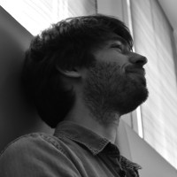

Welcome

I am currently Associate Professor (Maître de Conférence) at Université de
Rennes, France, in the EPICURE research team.
I am primarily interested in the formal verification of safety and security
properties, from low-level binary code to high-level specification.
Before that, I was a postdoc researcher at TU Wien, Austria, in the Security &
Privacy research unit, where I worked on the
formal verification of Web browser specification. This projet was founded by
the ERC grant Foundations and Tools for Client-Side Web
Security.
I did my PhD thesis entitled Decision Procedures for Vulnerability
Analysis at CEA LIST, in the Software
Safety & Security Lab, under the direction of Marie-Laure
Potet and the supervision of Sébastien
Bardin. This work was part of the
BINSEC project.
Contact
- firstname.lastname@irisa.fr
Publication
International Conferences
- WebSpec: Towards Machine-Checked Analysis of Browser Security
Mechanisms, with Lorenzo Veronese, Pedro
Bernardo, Mauro Tempesta, Marco Squarcina and Matteo Maffei
- Not All Bugs Are Created Equal, But Robust Reachability Can Tell The
Difference, with Guillaume Girol
and Sébastien Bardin, CAV 2021, Virtual Event
- Arrays Made Simpler: An Efficient, Scalable and Thorough
Preprocessing, with Robin David,
Sébastien Bardin and Matthieu Lemerre, LPAR 2018, Awassa, Ethiopia
- Model Generation for Quantified Formulas: A Taint-Based
Approach, with Sébastien Bardin,
Richard Bonichon and Marie-Laure Potet, CAV 2018, Oxford, UK
Invited Talks
- WebSpec: Towards Machine-Checked Analysis of Browser Security Mechanisms,
National Research Days of GT Formal Methods for Security, 2022
- Decision Procedures for Vulnerability Analysis, Best Thesis Award GDR GPL
2020, National Research Days of GDR GPL, 2021
- Satisfiability Modulo Theories: From Safety to Security, National Research
Days of GT Formal Methods for Security, 2019
- SMT for Binary-Level Security Analysis, Next Challenges in Constraint
Solving, Dagstuhl Seminar, 2019
French Workshops
- En finir avec les faux positifs grâce à l’exécution symbolique robuste,
with Sébastien Bardin, Richard Bonichon and Marie-Laure Potet, JFLA 2019, Les
Rousses, France.
- Génération de modèles pour les formules quantifiées : une approche basée sur
la teinte, with Sébastien Bardin, Richard Bonichon and Marie-Laure Potet,
AFADL 2018, Grenoble, France.
- Simplification efficace pour la théorie des tableaux, with Robin David and
Sébastien Bardin, JFLA 2018, Banyuls-sur-Mer, France.
- Mergeable persistent data structures, with Thomas Gazagnaire et Anil
Madhavapeddy, JFLA 2015, Le Val d’Ajol, France
Teaching
2018 - 2019, at Paris Saclay University
- Advanced Functional Programming, Licence 3, 24h
- Computer Security, Licence 3, 24h
- Graph and Logic, Licence 2, 24h
- Initiation to Functional Programming, Licence 2, 18h
2017 - 2018, at Paris Diderot University
- Database, Licence 2, 36h
- Initiation to Java and Python, Licence 1, 24h
2016 - 2017, at Paris Diderot University
- Programming Project, Licence 2, 12h
- Concepts in Computer Science, Licence 1, 24h
- Initiation to Java and Python, Licence 1, 24h